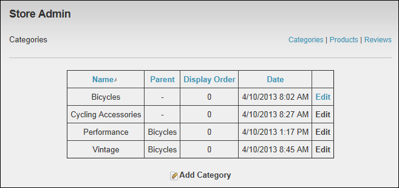
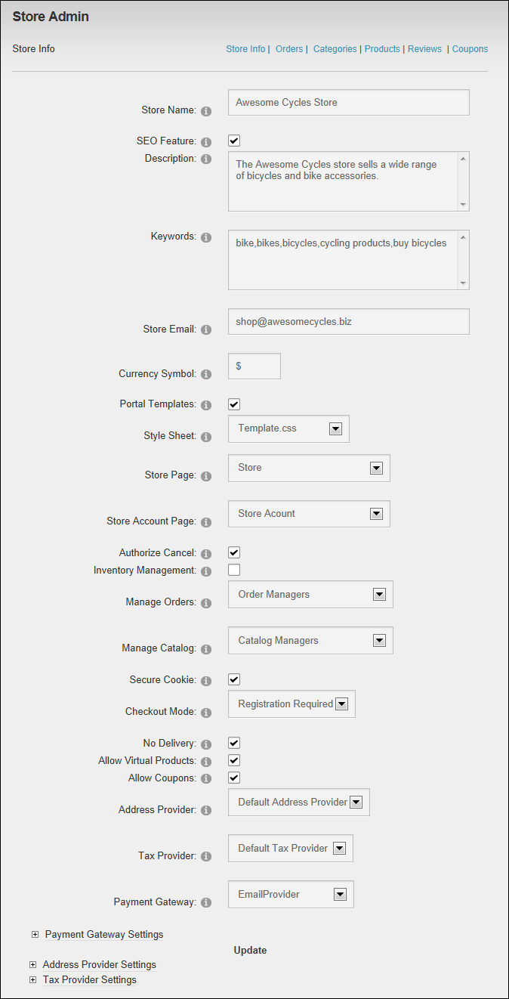
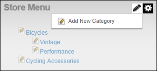

Store Admin module as viewed by an Order Manager
The Store Admin module can be configured to enable a single role to Manage Orders (update order status and send messages to the customer) and another (or the same) role to Manage Catalog (create and manage categories and products and well as manage reviews). In this way, the Store Admin module can handle all store administrative tasks from one place and provide different levels of access to different users.
Details on granting page and module permissions for the Store Admin module are covered in this tutorial.
To set this up now, you should create the role you want to manage orders and the one you want to manage the catalog before beginning this tutorial.
For the purpose of this manual, the following names are used when referring to these user groups:
Customers: Users who are members of role(s) that have been granted view permissions on the Store page.
Catalog Managers: Users who are members of the role which has been selected at the Manage Catalog field on the Store Info page of the Store Admin module. These users can access the Categories, Products and Review pages on the Store Admin module. These users don't have access to view and manage orders, coupons or store info.

Store Admin module as viewed by a Catalog Manager
Order Managers: Users who are members of the role which has been selected at the Manage Orders field on the Store Info page of the Store Admin module. These users can access the Orders pages on the Store Admin module.
Store Admin module as viewed by an Order Manager
Administrators: Users who are members of the Administrator or SuperUser role. These users can access all pages of the Store Admin module.

Store Admin Module as viewed by an Administrator
The following additional user groups have been superseded by the Catalog Managers role. They provide limited access to performing category and product management tasks. They are included here to provide details of what tasks are enabled when the below permissions are provided on these modules.
Category Managers: Users who are members of the role(s) which have been granted Edit Content/Edit permissions on the Store Menu module. Members of this role can add categories and manage parent categories. This role has been superseded by the Catalog Managers role but is still covered in this manual.

Store Menu module as viewed by a Category Manager
Product Managers: Users who are members of the role(s) which have been granted Edit Content/Edit permissions on the Store Catalog module. Members of this role can perform most product manager tasks; however they cannot restore archived products. This role has been superseded by the Catalog Managers role but is still covered in this manual.

Store Catalog module as viewed by a Product Manager